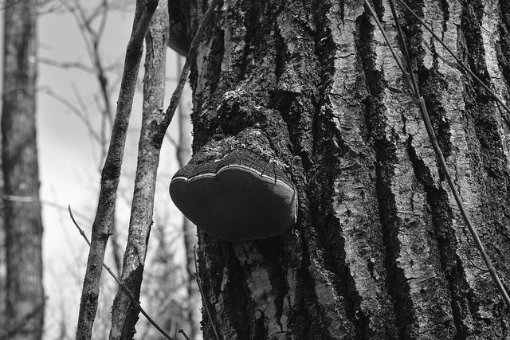

<!DOCTYPE html>

<head>
<title> Brett Adamson Photography </title>
<a href="PhotogIndex.html">


</a>


<link rel="stylesheet" type="text/css" href="./cssfinal/comment.css">
<link rel="stylesheet" type="text/css" href="./cssfinal/PhotogIndex.css">
<link rel="stylesheet" type="text/css" href="css/bootstrap.css">
<link rel="SHORTCUT ICON" type="image/x-icon" href="favicon2.ico" />
        <link rel="stylesheet" type="text/css" href="jcarousel.basic.css">
        <script type="text/javascript" src="../../vendor/jquery/jquery.js"></script>
        <script type="text/javascript" src="../../dist/jquery.jcarousel.min.js"></script>
        <script type="text/javascript" src="jcarousel.basic.js"></script>
		</head>
<body>

<body background="http://wallpaperskyline.com/wp-content/uploads/2015/02/black-background-hd-wallpapers-for-website.jpg"/>
		</html>
		<body>
<div class="item">
     
 </div>
 <div id="respond">
<ul id="nav">
					<li class="Current"><a href="/PhotogIndex.html">Home</a></li>
				
		
						<li><a href="/landscapes.html">Landscapes</a></li>
					<li><a href="/portraits.html">Portraits</a></li>
					<li><a href="/macro.html">Macro</a></li>
						<li><a href="/nature.html">Nature</a></li>
					<li class="Last"><a href="/church.html">Church</a></li>
				
				</ul>
 